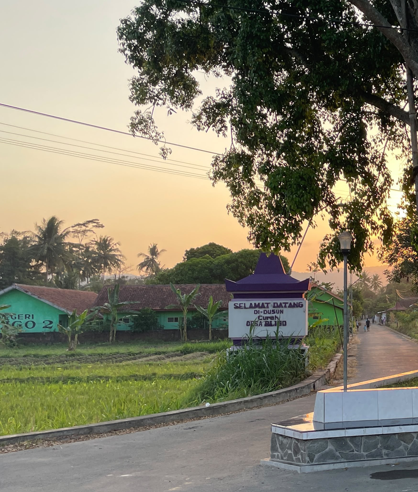

.jpeg)
SELAMAT DATANG DI DUSUN CURAH KIDUL
Dusun Curah Kidul merupakan salah satu dusun yang berada di Desa Bligo, Kecamatan Ngluwar, Kabupaten Magelang. Dusun ini memiliki lingkungan yang asri serta masyarakat yang ramah dan menjunjung tinggi semangat gotong royong.
PROFIL DUSUN
Tentang Dusun Curah Kidul
Dusun Curah Kidul merupakan salah satu dusun yang berada di Desa Bligo, Kecamatan Ngluwar, Kabupaten Magelang, Provinsi Jawa Tengah. Dusun ini memiliki lingkungan yang asri serta suasana yang nyaman bagi masyarakat. Sebagian besar masyarakat Dusun Curah Kidul bekerja di sektor pertanian dan usaha mikro sebagai mata pencaharian utama. Masyarakat Dusun Curah Kidul juga melaksanakan berbagai kegiatan kemasyarakatan, seperti kerja bakti, pengajian, dan kegiatan sosial lainnya secara rutin. Dusun Curah Kidul memiliki beberapa fasilitas umum, antara lain mushola, taman kanak-kanak, taman pendidikan Al-Qur'an (TPA), lapangan, dan pos ronda yang mendukung berbagai kegiatan masyarakat. Potensi pertanian dan usaha mikro yang dimiliki masyarakat menjadi salah satu kekuatan dalam mendukung kegiatan ekonomi di Dusun Curah Kidul.

Jumlah Penduduk
Kepala Keluarga
Rukun Tetangga (RT)
Fasilitas Umum